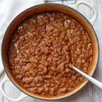

Food Recipes
Food Recipes
RICE

Ingredient
- Raw rice
- Water
- Pot
- Salt
- Green leaf
- Oil
Steps in cooking rice:
- Turn on your gas
- Put your water on fire for about 10 minutes
- Rinse your rice thrice
- Pour the rinde rice inside the boiling water
- Add oil and small amount of salt
Beans

Ingredients
- Beans
- Maggi
- Water
- Salt
- Palm oil
Steps in cooking beans:
- Put water inside pot and put it on fire.
- Rinse your picked beans.
- Pour it inside the water on fire.
- After about 50 minutes, add your pepper.
- After few minutes, add your palm oil.
- After 15 minutes, serve your beans to eat.